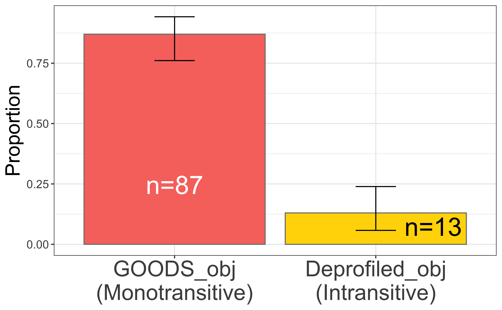
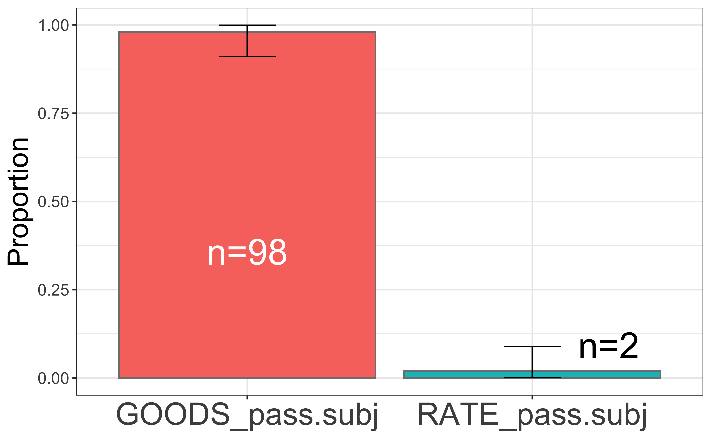
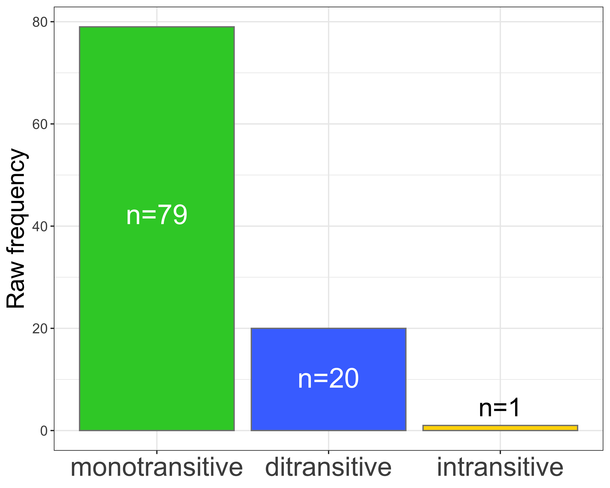
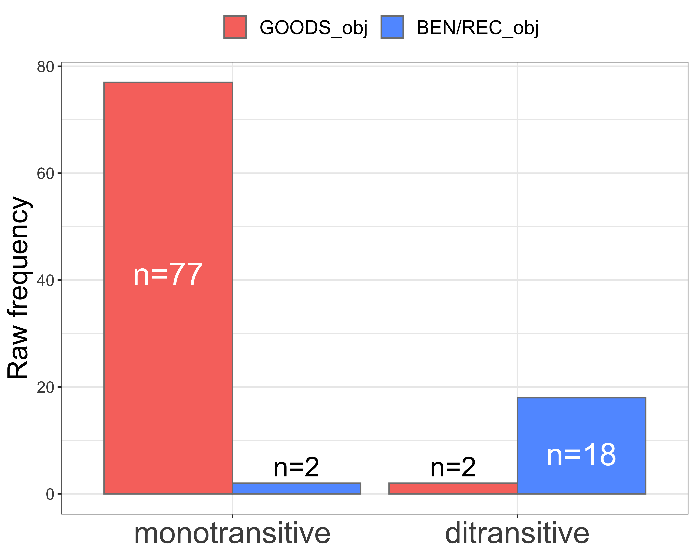
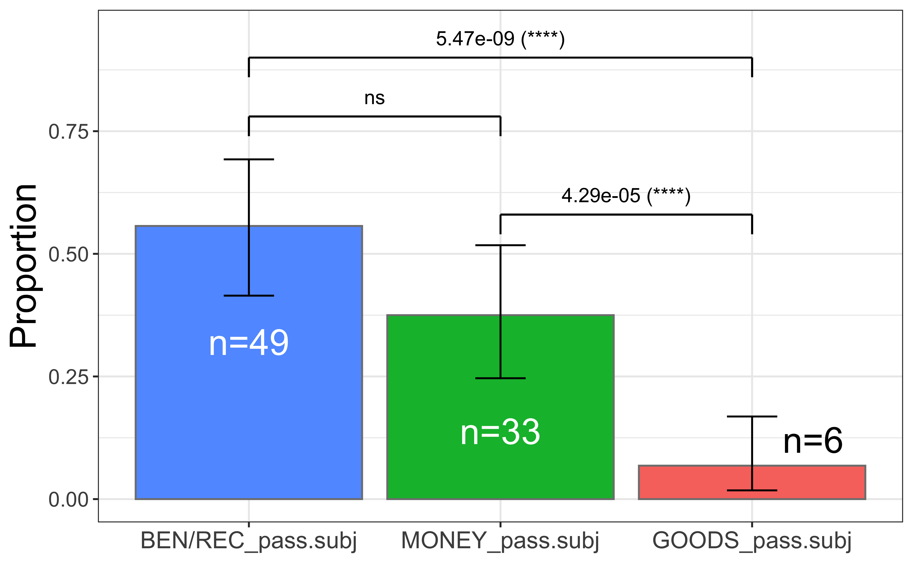

Code
# load packages =====
library(tidyverse)
library(readxl)
library(vcd)
library(EMT)
library(knitr)
library(ggpubr)
library(rstatix)Gede Primahadi Wijaya Rajeg ![]()
I Wayan Arka
# load packages =====
library(tidyverse)
library(readxl)
library(vcd)
library(EMT)
library(knitr)
library(ggpubr)
library(rstatix)Below is the code to load the corpus size table.
# load the corpus size table
# corpussize <- tibble::as_tibble(read.table(file = "/Volumes/GoogleDrive/Other computers/My MacBook Pro/Documents/Corpora/_corpusindo/Leipzig Corpora/corpus_total_size_per_file.txt", header = TRUE, sep = "\t", comment.char = "", quote = "")[-c(1, 13, 15), ])
# readr::write_tsv(corpussize, "../data/corpussize.txt")
corpussize <- readr::read_tsv("../data/corpussize.txt")The total size (in word-tokens) for the corpus is 119,557,093 tokens.
Below is the code to read-in the spreadsheet containing the annotated concordance data for beli (membeli, membelikan, dibeli, and dibelikan).
mydat <- read_xlsx("../data/BELI-main.xlsx")
df_membelikan <- mydat %>%
filter(node == "membelikan")
df_membeli <- mydat %>%
filter(node == "membeli")
df_dibeli <- mydat %>%
filter(node == "dibeli")
df_dibelikan <- mydat %>%
filter(node == "dibelikan")Below is the code to count the construction types and syntactic valence/transitivity for membeli (Table 1).
cxn_type_membeli <- df_membeli %>%
mutate(schema = replace(schema,
schema == "theme_obj_cxn",
"[Goods]{.smallcaps}_Obj Construction"),
schema = replace(schema,
schema == "intransitive",
"Intransitive Construction")) %>%
count(schema, syntactic_transitivity) %>%
arrange(desc(n))
cxn_type_membeli %>%
rename(`syntactic transitivity` = syntactic_transitivity,
`token freq.` = n) %>%
kable(caption = "Construction types/schemas and syntactic valence/transitivity for *membeli*")| schema | syntactic transitivity | token freq. |
|---|---|---|
| Goods_Obj Construction | monotransitive | 87 |
| Intransitive Construction | intransitive | 13 |
Below is the code to run the Proportion Test (Gries 2013: 135) for the schema and syntactic transitivity frequency.
cxn_type_membeli <- cxn_type_membeli %>%
# create factor for plotting.
mutate(syntactic_transitivity = factor(syntactic_transitivity,
levels = c("monotransitive",
"intransitive")),
N = sum(n),
expected = N/nrow(.),
alternatives = if_else(n < expected, "less", "greater"),
# run binomial test
binomtest = pmap(list(x = n, n = N), binom.test, conf.level = 0.99),
# extract confidence interval
conf_low = map_dbl(binomtest, list("conf.int", 1)),
conf_high = map_dbl(binomtest, list("conf.int", 2)),
# extract the estimate
estimate = map_dbl(binomtest, "estimate"),
# extract p-value
pval = map_dbl(binomtest, "p.value"),
signifs = "ns",
signifs = if_else(pval < 0.05, "*", signifs),
signifs = if_else(pval < 0.01, "**", signifs),
signifs = if_else(pval < 0.001, "***", signifs)
)
cxn_type_membeli %>%
select(-binomtest, -N, -alternatives, -expected) %>%
mutate(conf_low = round(conf_low, 2),
conf_high = round(conf_high, 2),
estimate = round(estimate, 2),
pval = format(pval, digits = 4, scientific = TRUE)) %>%
kable()| schema | syntactic_transitivity | n | conf_low | conf_high | estimate | pval | signifs |
|---|---|---|---|---|---|---|---|
| Goods_Obj Construction | monotransitive | 87 | 0.76 | 0.94 | 0.87 | 1.313e-14 | *** |
| Intransitive Construction | intransitive | 13 | 0.06 | 0.24 | 0.13 | 1.313e-14 | *** |
# get the base, "red" ggplot2 colour using `scales` package
ggred <- scales::hue_pal()(2)[1]
cxn_type_membeli %>%
# edit factor for plotting.
mutate(schema = replace(schema, str_detect(schema, "Goods"), "GOODS_obj\n(Monotransitive)"),
schema = replace(schema, str_detect(schema, "Intran"), "Deprofiled_obj\n(Intransitive)"),
schema = factor(schema, levels = c("GOODS_obj\n(Monotransitive)", "Deprofiled_obj\n(Intransitive)"))) %>%
ggplot(aes(x = schema,
y = estimate,
fill = syntactic_transitivity)) +
geom_col(position = position_dodge(.9), colour = "gray50") +
geom_text(aes(label = paste("n=", n, sep = "")),
position = position_dodge(.9),
vjust = c(8.75, 1.25),
hjust = c(0.5, -.5),
colour = c("white", "black"),
size = 9) +
theme_bw() +
scale_fill_manual(values = c(ggred, "gold")) +
labs(y = "Proportion",
fill = NULL,
x = NULL) +
theme(legend.position = "none",
axis.title.y = element_text(size = 20),
axis.text.y = element_text(size = 11.5),
axis.text.x = element_text(size = 22)) +
geom_errorbar(aes(ymin = conf_low, ymax = conf_high),
width = .2, position = position_dodge(.9))
The results in Table 2 and Figure 1 show that the Monotransitive, Goods-as-object construction is unsurprisingly and highly significantly the predominant argument realisation pattern for the base membeli.
cxn_type_dibeli <- df_dibeli %>%
filter(schema != "???") %>%
count(schema, syntactic_transitivity) %>%
arrange(desc(n))cxn_type_dibeli2 <- df_dibeli %>%
filter(schema != "???") %>%
count(schema) %>%
arrange(desc(n)) %>%
mutate(schema = str_replace(schema, "theme", "goods"),
schema = replace(schema, schema == "subj_goods", "GOODS_pass.subj"),
schema = replace(schema, schema == "subj_rate", "RATE_pass.subj"),
schema = factor(schema, levels = c("GOODS_pass.subj", "RATE_pass.subj")),
N = sum(n),
# run binomial test
binomtest = pmap(list(x = n, n = N), binom.test, conf.level = 0.99),
# extract confidence interval
conf_low = map_dbl(binomtest, list("conf.int", 1)),
conf_high = map_dbl(binomtest, list("conf.int", 2)),
# extract the estimate
estimate = map_dbl(binomtest, "estimate"),
# extract the p-value
pval = map_dbl(binomtest, "p.value"),
signifs = "ns",
signifs = if_else(pval < 0.05, "*", signifs),
signifs = if_else(pval < 0.01, "**", signifs),
signifs = if_else(pval < 0.001, "***", signifs))cxn_type_dibeli2 %>%
ggplot(aes(x = schema,
y = estimate,
fill = schema)) +
geom_col(position = position_dodge(.9), colour = "gray50") +
geom_text(aes(label = paste("n=", n, sep = "")),
position = position_dodge(.9),
vjust = c(9, -.5),
hjust = c(.5, -.75),
size = 9,
colour = c("white", "black")) +
theme_bw() +
# scale_fill_manual(values = c("limegreen", "gold")) +
labs(y = "Proportion",
fill = "Cxn Type",
x = NULL) +
theme(axis.text.x = element_text(size = 22),
legend.position = "none",
axis.title.y = element_text(size = 20),
axis.text.y = element_text(size = 11.5)) +
geom_errorbar(aes(ymin = conf_low, ymax = conf_high),
width = .2, position = position_dodge(.9))
cxn_type_membelikan <- df_membelikan %>%
count(schema, syntactic_transitivity) %>%
arrange(syntactic_transitivity, desc(n)) %>%
group_by(syntactic_transitivity) %>%
mutate(n_transitivity = sum(n)) %>%
arrange(desc(n_transitivity), desc(n)) %>%
ungroup()
## retrieve the intransitive singleton for "membelikan"
df_membelikan %>% filter(syntactic_transitivity=='intransitive') %>% pull(node_sentences)[1] "AQSIQ minta kepada orang tua untuk melakukan pemeriksaan terhadap mainan sebelum<m>membelikan</m>kepada anak-anaknya."padjs1 <- 0.05/3
padjs2 <- 0.01/3
padjs3 <- 0.001/3
synt_trans_membelikan <- cxn_type_membelikan %>%
# filter(schema != "intransitive") %>%
mutate(schema = str_replace(schema, "theme", "goods"),
schema = str_replace(schema, "recipient", "recipient/beneficiary"),
schema = replace(schema, schema == "intransitive", "deprofiled_obj"),
schema = str_replace(schema, "_cxn$", ""),
syntactic_transitivity = factor(syntactic_transitivity,
levels = c("monotransitive", "ditransitive", "intransitive")),
schema = factor(schema,
levels = c("goods_obj", "recipient/beneficiary_obj", "deprofiled_obj"))) %>%
group_by(syntactic_transitivity) %>%
summarise(n = sum(n))
synt_trans_membelikan <- synt_trans_membelikan %>%
mutate(N = sum(n),
# run binomial test
binomtest = pmap(list(x = n, n = N), binom.test, conf.level = 0.99),
# extract confidence interval
conf_low = map_dbl(binomtest, list("conf.int", 1)),
conf_high = map_dbl(binomtest, list("conf.int", 2)),
# extract the estimate
estimate = map_dbl(binomtest, "estimate"),
# extract the p-value
pval = map_dbl(binomtest, "p.value"),
signifs = "ns",
signifs = if_else(pval < padjs1, "*", signifs),
signifs = if_else(pval < padjs2, "**", signifs),
signifs = if_else(pval < padjs3, "***", signifs))synt_trans_membelikan_vector <- synt_trans_membelikan$n
names(synt_trans_membelikan_vector) <- synt_trans_membelikan$syntactic_transitivity
synt_trans_membelikan_pairwise_binom <- pairwise_binom_test(synt_trans_membelikan_vector,
p.adjust.method = "bonferroni",
conf.level = 0.99) %>%
mutate(p.adjt = paste(format(p.adj, digits = 4, scientific = TRUE), " (", p.adj.signif, ")", sep = ""))length_valence <- length(synt_trans_membelikan$syntactic_transitivity)
prob_valence <- rep(1/length_valence, length_valence)
pmultinom <- EMT::multinomial.test(observed = synt_trans_membelikan$n, prob = prob_valence)
The model includes 5151 different events.
Exact Multinomial Test
Events pObs p.value
5151 0 0# p-value = 0synt_trans_membelikan %>%
ggplot(aes(x = syntactic_transitivity,
y = n,
fill = syntactic_transitivity)) +
geom_col(position = position_dodge(.9), colour = "gray50") +
geom_text(aes(label = paste("n=", n, sep = "")),
position = position_dodge(.9),
vjust = c(10, 3, -.5),
hjust = c(.5, .5, .5),
size = c(8, 8, 7.5),
colour = c("white", "white", "black")) +
theme_bw() +
scale_fill_manual(values = c("limegreen", "royalblue1", "gold")) +
labs(y = "Raw frequency",
fill = NULL,
x = NULL) +
theme(legend.position = "none",
axis.title.y = element_text(size = 20),
axis.text.y = element_text(size = 11.5),
axis.text.x = element_text(size = 22)) # +
#geom_errorbar(aes(ymin = conf_low, ymax = conf_high),
# width = .2, position = position_dodge(.9)) # +
# ylim(NA, 1) +
# geom_segment(x = 1.3, xend = 2, y = 0.84, yend = 0.84) +
# geom_segment(x = 1.3, xend = 1.3, y = 0.84, yend = 0.82) +
# geom_segment(x = 2, xend = 2, y = 0.84, yend = 0.82) +
# annotate("text",
# x = 1.7, y = 0.88,
# label = pull(filter(synt_trans_membelikan_pairwise_binom, group1 == "monotransitive", group2 == "ditransitive"), p.adjt)) +
#
# geom_segment(x = 1, xend = 3, y = 0.96, yend = 0.96) +
# geom_segment(x = 1, xend = 1, y = 0.96, yend = 0.94) +
# geom_segment(x = 3, xend = 3, y = 0.96, yend = 0.94) +
# annotate("text",
# x = 2, y = 1,
# label = pull(filter(synt_trans_membelikan_pairwise_binom, group1 == "monotransitive", group2 == "intransitive"), p.adjt)) +
#
# geom_segment(x = 2, xend = 3, y = 0.38, yend = 0.38) +
# geom_segment(x = 2, xend = 2, y = 0.38, yend = 0.36) +
# geom_segment(x = 3, xend = 3, y = 0.38, yend = 0.36) +
# annotate("text",
# x = 2.5, y = 0.42,
# label = pull(filter(synt_trans_membelikan_pairwise_binom, group1 == "ditransitive", group2 == "intransitive"), p.adjt))
# get the base, "blue" ggplot2 colour using `scales` package
ggblue <- scales::hue_pal()(3)[3]
### 2.1 data preparation and binomial test for CI =====
cxn_type_synt_trans_membelikan <- cxn_type_membelikan %>%
filter(schema != "intransitive") %>%
mutate(schema = str_replace(schema, "theme", "GOODS"),
schema = str_replace(schema, "recipient", "BEN/REC"),
schema = str_replace(schema, "_cxn$", ""),
syntactic_transitivity = factor(syntactic_transitivity,
levels = c("monotransitive", "ditransitive")),
schema = factor(schema, levels = c("GOODS_obj", "BEN/REC_obj")),
perc_schema = round(n/n_transitivity * 100, 2),
binomtest = pmap(list(x = n, n = n_transitivity),
binom.test, conf.level = 0.99),
conf_low = map_dbl(binomtest, list("conf.int", 1)),
conf_high = map_dbl(binomtest, list("conf.int", 2)),
estimate = map_dbl(binomtest, "estimate"),
pval = map_dbl(binomtest, "p.value")
)
### 2.2 visualisation proper =======
cxn_type_synt_trans_membelikan %>%
ggplot(aes(x = syntactic_transitivity,
y = n,
fill = schema)) +
geom_col(position = position_dodge(.9), colour = "gray50") +
geom_text(aes(label = paste("n=", n, sep = "")),
position = position_dodge(.9),
vjust = c(9, -.35, 3, -.35),
hjust = c(.5, .5, .5, .5),
size = c(8, 7, 8, 7),
colour = c("white", "black", "white", "black")) +
theme_bw() +
scale_fill_manual(values = c(ggred, ggblue, ggblue, ggred, ggblue)) +
labs(y = "Raw frequency",
fill = NULL,
x = NULL) +
# geom_errorbar(aes(ymin = conf_low, ymax = conf_high),
# width = .2, position = position_dodge(.9)) +
theme(axis.text.x = element_text(size = 22),
axis.title.y = element_text(size = 20),
axis.text.y = element_text(size = 11.5),
legend.text = element_text(size = 14),
legend.title = element_text(size = 18),
legend.position = "top")
The applicative membelikan shows similar profile as the base membeli in their predominant monotransitive usage, especially in the GOOD-as-OBJ construction. There is no statistical difference for this construction between membelikan (N=77) and membeli (N=87). The statistical test for this is shown in the code below.
goods_obj_membelikan <- cxn_type_synt_trans_membelikan %>% filter(schema == "GOODS_obj", syntactic_transitivity == "monotransitive") %>% pull(n)
goods_obj_membeli <- cxn_type_membeli %>% slice_max(n = 1, order_by = n) %>% pull(n)
chisq.test(c(goods_obj_membelikan, goods_obj_membeli))
Chi-squared test for given probabilities
data: c(goods_obj_membelikan, goods_obj_membeli)
X-squared = 0.60976, df = 1, p-value = 0.4349coreferentiality_df <- df_membelikan %>%
filter(syntactic_transitivity == "monotransitive",
str_detect(recipient_syntax, "MATRIX"))# 1. data preparation ======
oblique_membelikan_df <- df_membelikan %>%
filter(syntactic_transitivity == "monotransitive") %>%
count(recipient_syntax) %>%
mutate(syntx = if_else(str_detect(recipient_syntax, "^PP"),
"PP",
"others")) %>%
group_by(syntx) %>%
summarise(n=sum(n)) %>%
mutate(perc = n/sum(n) * 100)
oblique_membelikan <- oblique_membelikan_df %>%
filter(syntx == "PP") %>% pull(n)
ditrans_membelikan <- df_membelikan %>%
filter(syntactic_transitivity == "ditransitive") %>%
nrow()
# 2. binomial test
binom.test(c(oblique_membelikan, ditrans_membelikan))
Exact binomial test
data: c(oblique_membelikan, ditrans_membelikan)
number of successes = 25, number of trials = 45, p-value = 0.5515
alternative hypothesis: true probability of success is not equal to 0.5
95 percent confidence interval:
0.3999735 0.7035561
sample estimates:
probability of success
0.5555556 Not a significant distributional difference between the Monotransitive Oblique and the Double Object constructions.
Below is pronominality analysis. No significant difference (perhaps due to small sample) between Oblique vs. Double Object choice in terms of pronominality of the Beneficiary in three-way categories: NP, Pronoun, Proper Name.
benef_pron_mono <- df_membelikan %>%
filter(syntactic_transitivity %in% c("monotransitive"),
str_detect(recipient_syntax, "^PP")) %>%
count(recipient_pronominality) %>%
mutate(cxn = "monotransitive")
benef_pron_doubleobject <- df_membelikan %>%
filter(syntactic_transitivity %in% c("ditransitive")) %>%
count(recipient_pronominality) %>%
mutate(cxn = "ditransitive")
benef_pron <- bind_rows(benef_pron_mono,
benef_pron_doubleobject) %>%
# merge personal-pronoun-suffix with personal-pronoun
mutate(recipient_pronominality = str_replace(recipient_pronominality,
"^personal\\-pronoun(\\-suffix)?$",
"pronoun")) %>%
group_by(cxn, recipient_pronominality) %>%
summarise(n = sum(n), .groups = "drop")
benef_pron_mtx <- benef_pron %>%
pivot_wider(names_from = "recipient_pronominality", values_from = "n") %>%
data.frame(row.names = 1) %>%
as.matrix()
benef_pron_mtx np pronoun proper.name
ditransitive 8 9 3
monotransitive 16 4 5fisher.test(benef_pron_mtx)
Fisher's Exact Test for Count Data
data: benef_pron_mtx
p-value = 0.1035
alternative hypothesis: two.sidedProportion of lexical types of the Beneficiary/Recipient role of ditransitive membelikan are 45% (n=9) pronoun, 40% (n=8) noun phrase referring to animate entity/human, and 15% (n=3) proper name.
Now, trying to merge the categories into Pronoun vs. Non-Pronoun (proper name and NP). The result is also not significant.
benef_pron_merge <- benef_pron %>%
mutate(recipient_pronominality = replace(recipient_pronominality,
recipient_pronominality %in% c("np", "proper-name"),
"non_pronoun")) %>%
group_by(cxn, recipient_pronominality) %>%
summarise(n = sum(n), .groups = "drop")
benef_pron_merge_mtx <- benef_pron_merge %>%
pivot_wider(names_from = "recipient_pronominality", values_from = "n") %>%
data.frame(row.names = 1) %>%
as.matrix()
benef_pron_merge_mtx non_pronoun pronoun
ditransitive 11 9
monotransitive 21 4chisq.test(benef_pron_merge_mtx) # assumption met for exp. frequency
Pearson's Chi-squared test with Yates' continuity correction
data: benef_pron_merge_mtx
X-squared = 3.2465, df = 1, p-value = 0.07157# 1. data preparation ======
benef_anim_monotransitive_oblique <- df_membelikan %>%
filter(syntactic_transitivity %in% c("monotransitive"),
str_detect(recipient_syntax, "^PP")) %>%
count(recipient_animacy) %>%
mutate(cxn = "monotransitive_oblique")
benef_anim_ditransitive <- df_membelikan %>%
filter(syntactic_transitivity %in% c("ditransitive")) %>%
count(recipient_animacy) %>%
mutate(cxn = "ditransitive")
benef_anim_combined <- bind_rows(benef_anim_ditransitive, benef_anim_monotransitive_oblique)
benef_anim_combined_mtx <- benef_anim_combined %>%
pivot_wider(names_from = "recipient_animacy", values_from = "n", values_fill = 0L) %>%
data.frame(row.names = 1) %>%
as.matrix()
benef_anim_combined_mtx animate inanimate
ditransitive 20 0
monotransitive_oblique 24 1# 2. Fisher-Yates Excat Test ======
fisher.test(benef_anim_combined_mtx)
Fisher's Exact Test for Count Data
data: benef_anim_combined_mtx
p-value = 1
alternative hypothesis: true odds ratio is not equal to 1
95 percent confidence interval:
0.02052812 Inf
sample estimates:
odds ratio
Inf The distribution of Oblique vs. Double Object pattern regarding the Animacy of the Beneficiary is also not significantly different.
df_dibelikan1 <- df_dibelikan %>%
filter(str_detect(schema, "^null_", negate = TRUE)) %>%
mutate(schema = str_replace(schema, "recipient", "BEN/REC"),
schema = str_replace(schema, "theme", "GOODS"),
schema = str_replace(schema, "money", toupper("money")),
schema = str_replace_all(schema, "^([^_]+)_([^_]+)$", "\\2_pass.\\1"),
schema = factor(schema,
levels = c("GOODS_pass.subj",
"MONEY_pass.subj",
"BEN/REC_pass.subj")))
cxn_type_dibelikan <- df_dibelikan1 %>%
count(schema) %>%
mutate(prop = n/sum(n), prop = round(prop, 2),
N = sum(n))padjs1 <- 0.05/3
padjs2 <- 0.01/3
padjs3 <- 0.001/3
cxn_type_dibelikan1 <- cxn_type_dibelikan %>%
# run binomial test
mutate(binomtest = pmap(list(x = n, n = N), binom.test, conf.level = 0.99),
# extract confidence interval
conf_low = map_dbl(binomtest, list("conf.int", 1)),
conf_high = map_dbl(binomtest, list("conf.int", 2)),
# extract the estimate
estimate = map_dbl(binomtest, "estimate"),
pval = map_dbl(binomtest, "p.value"),
# p-value
signifs = "ns",
signifs = if_else(pval < padjs1, "*", signifs),
signifs = if_else(pval < padjs2, "**", signifs),
signifs = if_else(pval < padjs3, "***", signifs))
## pairwise binom
cxn_type_dibelikan_vector <- cxn_type_dibelikan$n
names(cxn_type_dibelikan_vector) <- cxn_type_dibelikan$schema
cxn_type_dibelikan_binom_pairwise <- pairwise_binom_test(cxn_type_dibelikan_vector, conf.level = .99, p.adjust.method = "bonferroni") %>%
mutate(p.adjt = paste(format(p.adj, digits = 3, scientific = TRUE), " (", p.adj.signif, ")", sep = ""))cxn_type_dibelikan1 %>%
ggplot(aes(x = fct_reorder(schema, -estimate),
y = estimate,
fill = schema)) +
geom_col(position = position_dodge(.9), colour = "gray50") +
geom_text(aes(label = paste("n=", n, sep = "")),
position = position_dodge(.9),
vjust = c(-.5, 5, 5),
hjust = c(-.5, .5, .5),
colour = c("black", "white", "white"),
size = 7) +
theme_bw() +
# scale_fill_manual(values = c("limegreen", "gold")) +
labs(y = "Proportion",
fill = NULL,
x = NULL) +
theme(axis.text.x = element_text(size = 13),
axis.text.y = element_text(size = 11.5),
axis.title.y = element_text(size = 20),
legend.position = "none") +
geom_errorbar(aes(ymin = conf_low, ymax = conf_high),
width = .2, position = position_dodge(.9)) +
ylim(NA, 0.95) +
geom_segment(x = 1, xend = 2, y = 0.78, yend = 0.78) +
geom_segment(x = 1, xend = 1, y = 0.78, yend = 0.74) +
geom_segment(x = 2, xend = 2, y = 0.78, yend = 0.74) +
annotate("text",
x = 1.5, y = 0.82,
label = cxn_type_dibelikan_binom_pairwise[3,][["p.adj.signif"]]) +
geom_segment(x = 1, xend = 3, y = 0.9, yend = 0.9) +
geom_segment(x = 1, xend = 1, y = 0.9, yend = 0.86) +
geom_segment(x = 3, xend = 3, y = 0.9, yend = 0.86) +
annotate("text",
x = 2, y = 0.94,
label = cxn_type_dibelikan_binom_pairwise[2,][["p.adj.signif"]]) +
geom_segment(x = 2, xend = 3, y = 0.58, yend = 0.58) +
geom_segment(x = 2, xend = 2, y = 0.58, yend = 0.54) +
geom_segment(x = 3, xend = 3, y = 0.58, yend = 0.54) +
annotate("text",
x = 2.5, y = 0.62,
label = cxn_type_dibelikan_binom_pairwise[1,][["p.adj.signif"]])